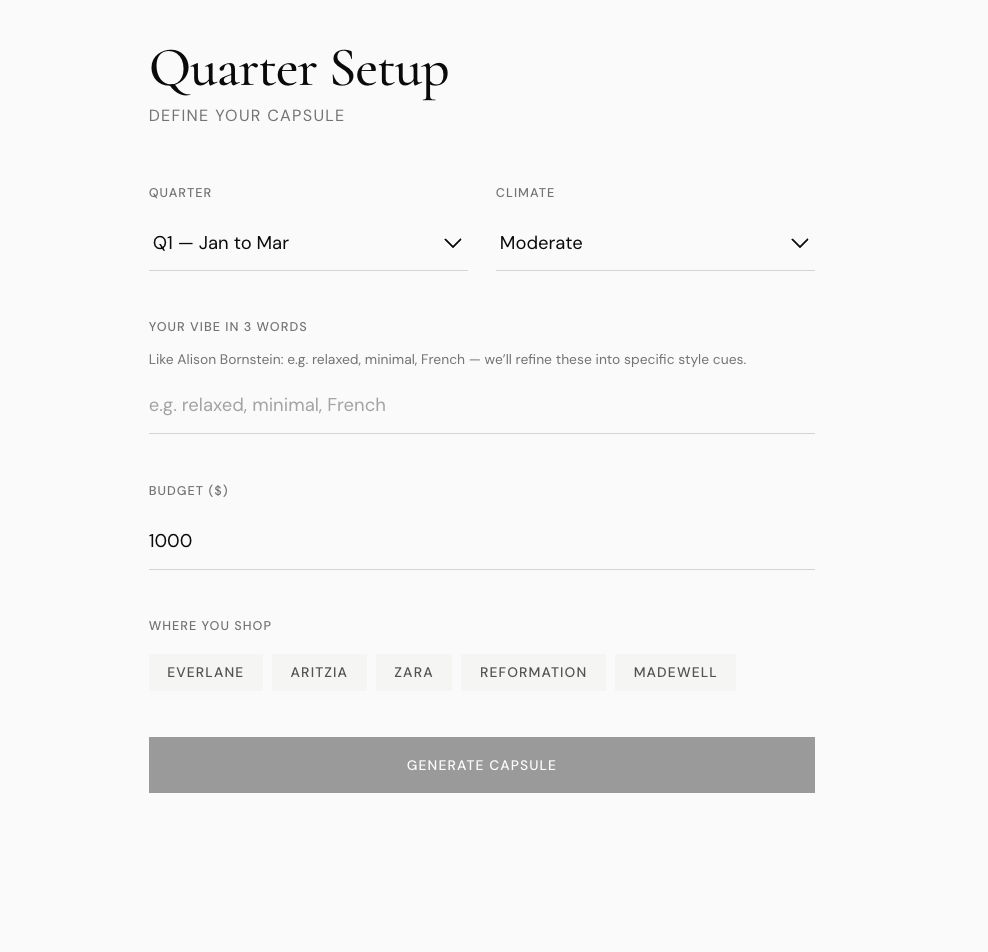
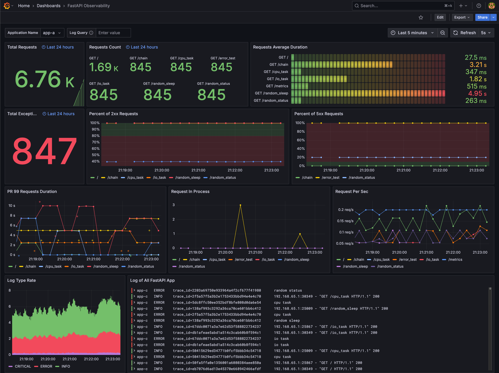
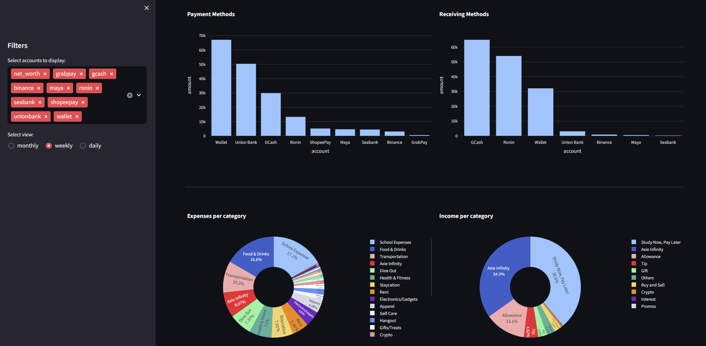

Hello, I'm
Marium Ashraf
|


Hello, I'm
|
Overview

Incoming Service Design Intern @ Equinix
Journey maps · service blueprints · design ops · research synthesis

B.Eng. Computer Engineering (Software)
TMU · Apr 2027
Design, requirements, databases, OS, algorithms, engineering economics, communications in engineering
I did not choose just one lane. I learned to work across strategy, operations, and engineering, then turn messy systems into clear workflows people can actually use. That mix is exactly what I'm taking into Equinix starting May 2026 — where I'll be supporting service design deliverables and design operations so teams can move faster with more clarity.
Credentials
Vector Institute
Fall 2025
DaRMoD (Data Readiness for Model Development) — applied at Lyrata: workflows, ownership, gaps → structured improvements.
Toronto Metropolitan University
Graduating April 2027
Software design, requirements & PM, databases, OS, algorithms, engineering economics, communications in engineering.
Roles
Starting · May 2026
June 2025 – April 2026
January 2026 – April 2026
Stack
Journeys & funnels · competitive / market scans · ambiguous problems → clear hypotheses
SQL (Postgres, BigQuery) · Excel · KPIs · diagnostics · validation → decisions
Cross-functional (product, ops, leadership) · exec-ready decks · docs · Agile — Jira, Azure DevOps
Python · JS/TS · REST · OpenAI · Figma · Miro · Zapier · Docker · AWS/GCP · CI/CD (GitHub Actions)
How I work
Ambiguous ops → measurable workflows → tools teams adopt.
Funnels · KPIs · diagnostics · SQL + Excel → leadership-ready numbers
Ambiguity → workflows + docs · Jira · Azure DevOps · trade-offs + handoffs built for adoption
Complex inputs → priorities + implementation path · client & internal decks · product / ops / leadership alignment
Builds

A full-stack AI wardrobe planner with a built-in "Should I buy this?" decision assistant — overlap analysis, price-per-wear scoring, review signal parsing. Built end-to-end because I had a real problem and wanted a real solution.
React · Vite · Tailwind · FastAPI · SQLite · Docker · CI/CD

Full observability stack for a FastAPI service — traces, metrics, and logs wired together with Grafana, Prometheus, Tempo, and Loki. Load-tested with Locust and k6. Built to be production-grade, not just a tutorial.
FastAPI · OpenTelemetry · Grafana · Docker Compose

Streamlit spend analytics pulling from Bluecoins data — budgets, category trends, income and balance charts. ETL pipeline from CSV to SQL to UI, containerized with Docker.
Streamlit · pandas · SQLAlchemy · Docker

Serverless retirement-planning chatbot on AWS — Lex for conversational UX, Lambda for secure calculations, risk-based portfolio recommendations.
AWS Lex · Lambda · Serverless
Get in Touch
Roles, projects, or coffee chats — reach out below. Especially interested in service design, design ops, and strategy roles where engineering fluency is an asset.